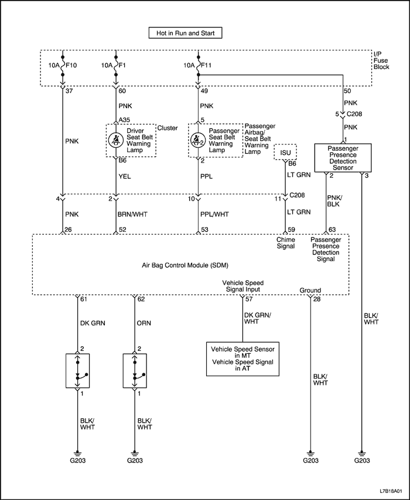
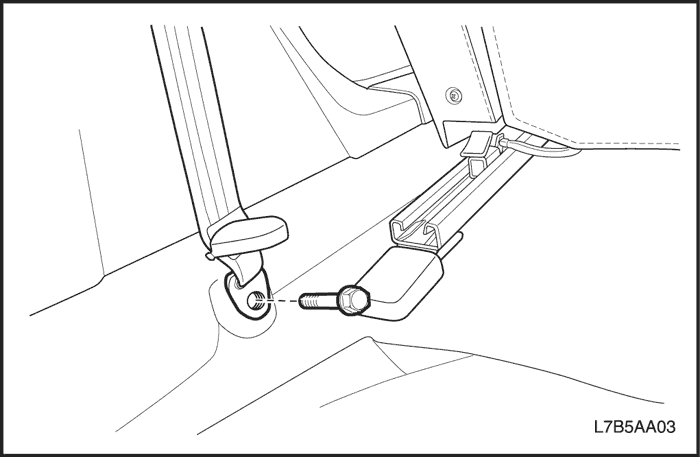
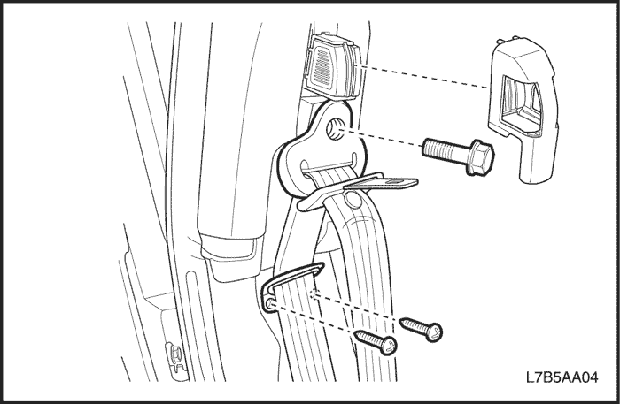
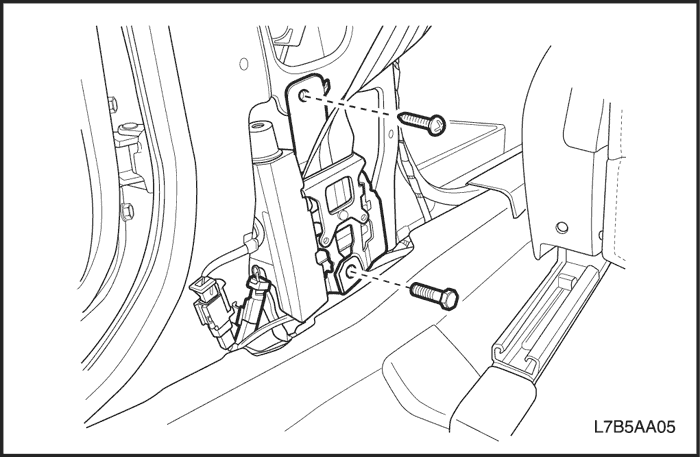
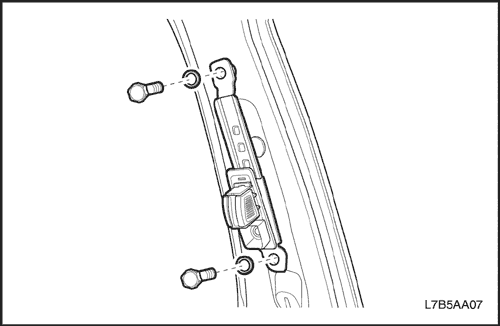
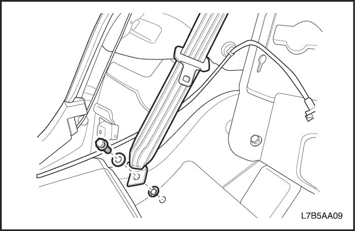
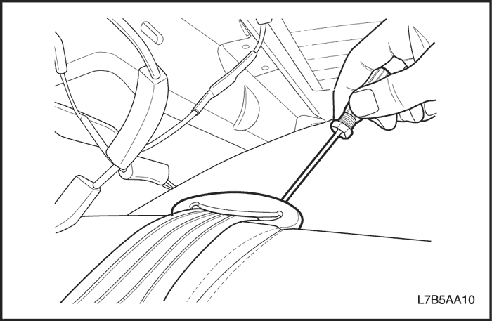
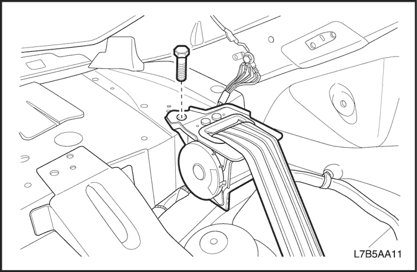
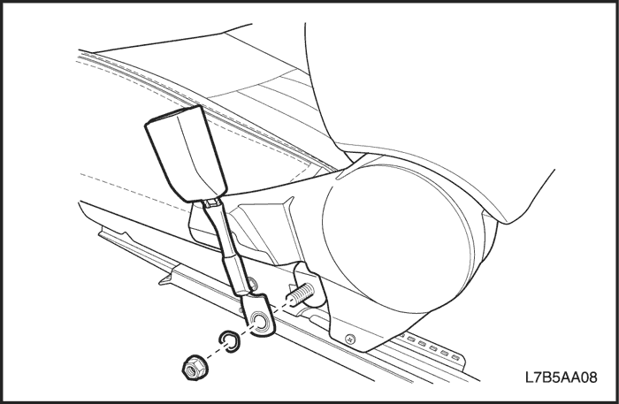
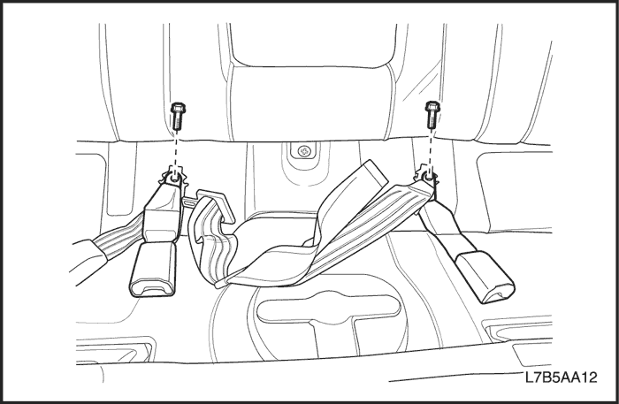

SECCIÓN 8A
CINTURONES DE SEGURIDAD
Precaución: Desconecte el cable negativo de la batería antes de desmontar o instalar cualquier unidad eléctrica o cuando exista la posibilidad de que una herramienta o equipo pueda entrar en contacto con bornes eléctricos expuestos. La desconexión de dicho cable ayudará a evitar lesiones personales y daños al vehículo. La llave de contacto debe estar en posición LOCK a menos que se indique lo contrario.
ESPECIFICACIONES
Especificaciones de apriete
| Aplicación | N•m | Árbol de transmisión izquierdo | Articulación |
| Tornillos del regulador de altura del cinturón de seguridad delantero | 38 | 28 | - |
| Tornillo de anclaje del cinturón de seguridad | 38 | 28 | - |
| Tornillos del soporte del retractor del cinturón de seguridad | 3 | - | 27 |
| Tornillo del retractor del cinturón de seguridad | 38 | 28 | - |
| Tornillo y tuerca de la hebilla del cinturón de seguridad | 38 | 28 | - |
DIAGRAMAS DE ESQUEMAS Y DIRECCIONES
Luz de aviso del cinturón de seguridad del conductor y el pasajero



DIAGNÓSTICO
Aviso del cinturón de seguridad del conductor
La luz de aviso del cinturón de seguridad no se enciende en ningún momento
| Paso | Medida | Valor(es) | Sí | No |
| 1 | Compruebe el fusible F1 de la luz de aviso del cinturón de seguridad. ¿Está fundido el fusible F1? | - | Vaya al Paso 2 | Vaya al Paso 3 |
| 2 | - Compruebe si hay un cortocircuito y repárelo si es necesario.
- Sustituya el fusible.
¿Se ha realizado la reparación? | - | Sistema OK | - |
| 3 | - Gire la llave de contacto a la posición ON.
- Compruebe la tensión en el fusible F1.
¿El valor de la tensión es el mismo que el especificado? | 9 - 16 V | Vaya al Paso 5 | Vaya al Paso 4 |
| 4 | Repare el circuito de alimentación de corriente abierto del fusible F1. ¿Se ha realizado la reparación? | - | Sistema OK | - |
| 5 | - Desenchufe el conector del interruptor del cinturón de seguridad (situado debajo del asiento del conductor).
- Conecte un puente entre los terminales en el lado del cableado del conector del interruptor del cinturón de seguridad.
- Gire la llave de contacto a la posición ON.
¿Se enciende la luz de aviso del cinturón de seguridad? | - | Vaya al Paso 6 | Vaya al Paso 7 |
| 6 | Sustituya el interruptor del cinturón de seguridad. ¿Se ha realizado la reparación? | - | Sistema OK | - |
| 7 | - Desmonte el cuadro de instrumentos.
- Compruebe la lámpara de la luz de aviso del cinturón de seguridad.
¿Está bien la bombilla? | - | Vaya al Paso 9 | Vaya al Paso 8 |
| 8 | Sustituya la bombilla de la luz de aviso. ¿Se ha realizado la reparación? | - | Sistema OK | - |
| 9 | Repare el circuito abierto entre el terminal B6 del cuadro de instrumentos y masa. ¿Se ha realizado la reparación? | - | Sistema OK | - |
MANTENIMIENTO Y REPARACIÓN
servicio con vehículo en marcha

Pretensor del cinturón de seguridad delantero
Procedimiento de desmontaje
- Desconecte el cable negativo de la batería.
- Desmonte la tapa de plástico para dejar al descubierto el anclaje del cinturón de seguridad en el montante B inferior.
- Quite el tornillo y desmonte el anclaje del cinturón de seguridad en el montante B inferior.

- Desmonte el panel de guarnecido del montante B inferior. Consulte la Sección 9G, Guarnecido interior.
- Desmonte la tapa de plástico para dejar al descubierto el anclaje superior del cinturón de seguridad del montante B.
- Desmonte los tornillos y el soporte de la guía del cinturón de seguridad.
- Quite el tornillo y desmonte el anclaje del cinturón de seguridad en el montante B superior.

- Desenchufe el conector del pretensor.
- Quite los tornillos del soporte del retractor del cinturón de seguridad.
- Quite el tornillo y desmonte el retractor del cinturón de seguridad.
procedimiento de montaje
Precaución: Si no se coloca el tornillo correcto para el retractor, el pretensor del cinturón de seguridad puede fallar en caso de accidente y provocar, quizás, lesiones personales.
Aviso: Metales distintos en contacto directo pueden corroerse rápidamente. Asegúrese de utilizar los elementos de sujeción correctos para evitar una corrosión prematura.
- Monte el retractor del cinturón de seguridad con su tornillo.
Apretar
Apriete el tornillo del retractor del cinturón de seguridad hasta 38 N•m (28 lb-pie).
- Monte el soporte del retractor del cinturón de seguridad con su tornillo.
Apretar
Apriete el tornillo del soporte del cinturón de seguridad hasta 3 N•m (27 lb-pulg.).
- Enchufe el conector del pretensor.
- Monte el anclaje del cinturón de seguridad en el montante B superior con su tornillo.
Apretar
Apriete el tornillo del anclaje del cinturón de seguridad hasta 38 N•m (28 lb-pie).
- Monte la tapa de plástico del anclaje del cinturón de seguridad.
- Monte el panel de guarnecido del montante B inferior. Consulte la Sección 9G, Guarnecido interior.
- Monte el anclaje del cinturón de seguridad en el montante B inferior con su tornillo.
Apretar
Apriete el tornillo del anclaje del cinturón de seguridad hasta 38 N•m (28 lb-pie).
- Monte la tapa de plástico del anclaje del cinturón de seguridad.
- Conecte el cable negativo de la batería.

Regulador de altura del cinturón de seguridad delantero
Procedimiento de desmontaje
- Desmonte el panel de guarnecido del montante- B superior. Consulte la Sección 9G, Guarnecido interior.
- Quite los tornillos y desmonte el regulador de altura del cinturón de seguridad.
procedimiento de montaje
Aviso: Metales distintos en contacto directo pueden corroerse rápidamente. Asegúrese de utilizar los elementos de sujeción correctos para evitar una corrosión prematura.
- Monte el regulador de altura del cinturón de seguridad con sus tornillos.
Apretar
Apriete los tornillos del regulador de altura del cinturón de seguridad delantero hasta 38 N•m (28 lb-pie).
- Monte el panel de guarnecido del montante B superior. Consulte la Sección 9G, Guarnecido interior.

cinturón de seguridad trasero de tres puntos
Procedimiento de desmontaje
- Desmonte el cojín/respaldo del asiento trasero. Consulte la Sección 9H, Asientos.
- Desmonte el panel de guarnecido del montante - B. Consulte la Sección 9G, Guarnecido interior.
- Quite el tornillo y desmonte el anclaje inferior del cinturón de seguridad.

- Desmonte el panel de guarnecido de la bandeja trasera. Consulte la Sección 9G, Guarnecido interior.
- Desmonte la guía del cinturón de seguridad de la bandeja trasera.

- Quite el tornillo y desmonte el retractor del cinturón de seguridad trasero.
procedimiento de montaje
- Monte el retractor del cinturón de seguridad trasero con su tornillo.
Apretar
Apriete el tornillo del retractor del cinturón de seguridad hasta 38 N•m (28 lb-pie).
- Monte la guía del cinturón de seguridad en la bandeja trasera.
- Monte el panel de guarnecido de la bandeja trasera. Consulte la Sección 9G, Guarnecido interior.
- Monte el anclaje inferior del cinturón de seguridad con su tornillo.
Apretar
Apriete el tornillo del anclaje del cinturón de seguridad hasta 38 N•m (28 lb-pie).
- Monte el panel de guarnecido del montante -C. Consulte la Sección 9G, Guarnecido interior.
- Coloque el cojín/respaldo del asiento trasero. Consulte la Sección 9H, Asientos.

Hebilla del cinturón de seguridad delantero
Procedimiento de desmontaje
- Desmonte el conjunto del asiento delantero. Consulte la Sección 9H, Asientos.
- Quite la tuerca y desmonte la hebilla del cinturón de seguridad delantero.
procedimiento de montaje
- Monte la hebilla del cinturón de seguridad delantero con su tuerca.
Apretar
Apriete la tuerca de la hebilla del cinturón de seguridad hasta 38 N•m (28 lb-pie).
- Monte el conjunto del asiento delantero. Consulte la Sección 9H, Asientos.

Hebilla del cinturón de seguridad trasero
Procedimiento de desmontaje
- Desmonte el cojín del asiento. Consulte la Sección 9H, Asientos.
- Quite los tornillos y desmonte la hebilla del cinturón de seguridad trasero.
procedimiento de montaje
- Monte la hebilla del cinturón de seguridad trasero con sus tornillos.
Apretar
Apriete los tornillos de la hebilla del cinturón de seguridad hasta 38 N•m (28 lb-pie).
- Coloque el cojín del asiento. Consulte la Sección 9H, Asientos.
DESCRIPCIÓN GENERAL Y FUNCIONAMIENTO DEL SISTEMA
Recordatorio del cinturón de seguridad del conductor
El sistema de recordatorio del asiento de seguridad es un sistema que alerta con un sonido y una luz cuando el cinturón no está abrochado.
La severidad del nivel de aviso depende del estado del vehículo y queda señalizado para el conductor con una luz y un sonido de aviso del cinturón de seguridad.
Tras girar la llave de encendido a la posición ON, la luz de aviso del cinturón de seguridad del conductor y el pasajero se encenderá durante 5 segundos y se apagará durante 2 segundos independientemente de la presencia del pasajero y de que lleve o no el cinturón.
Tras esto, si el cinturón de seguridad del conductor no ha sido abrochado, la luz de aviso parpadeará durante 90 segundos y después se iluminará hasta que se abroche el cinturón de seguridad. En este momento, si se ha abrochado el cinturón de seguridad, la luz de aviso de apagará inmediatamente.
En el caso de la luz de aviso del cinturón de seguridad del pasajero, si el sensor PPD instalado en el cojín del asiento del pasajero detecta la presencia de una persona y el cinturón de seguridad no se ha abrochado, se encenderá la luz de aviso.
Tras esto, el recordatorio del cinturón de seguridad seguirá el siguiente proceso según el estado del vehículo.
| Estado del vehículo | Luz de aviso | Sonido de aviso |
| Desabrochado y velocidad del vehículo < 22 km/h | Parpadea (1Hz) | DESCONECTADO |
| Desabrochado y velocidad del vehículo ≥ 22 km/h | Parpadea (1Hz) | CONTACTO |
Pretensor del cinturón de seguridad delantero
El pretensor del cinturón de seguridad delantero viene de serie. Incluye un retractor pirotécnico controlado mecánicamente que reduce la flojedad del cinturón de seguridad cuando éste se activa en un choque frontal recto o en ángulo. El cinturón de seguridad delantero con pretensor debe cambiarse después de un accidente que lo haya activado.
Cinturón de seguridad trasero ELR con tres puntos de anclaje
Los cinturones de seguridad con retractor de bloqueo de emergencia (ELR) y anclaje en tres puntos vienen de serie para el asiento delantero del pasajero y los asientos traseros orientados al exterior.
El cinturón de seguridad ELR dispone de un modo de retractor de bloqueo de emergencia (ELR).
Normalmente, el cinturón de seguridad funciona en el modo ELR. Esto permite la libertad de movimiento del pasajero, salvo en situaciones de emergencia.
Comprobaciones del funcionamiento
Precaución: - Mantenga los objetos cortantes y potencialmente dañinos alejados de los cinturones de seguridad.
- Trate de no dañar o deformar la hebilla o la placa del cierre.
- No decolore o tiña la correa del cinturón de seguridad. Para lavar los cinturones, utilice, únicamente, agua y un jabón suave.
- Cuando se monten los tornillos del anclaje del cinturón de seguridad, comience apretando los tornillos con la mano para evitar que se pasen de rosca.
- No trate de efectuar ningún tipo de reparación en el mecanismo del retractor ni en las tapas. Sustituya cualquier conjunto defectuoso por otro nuevo.
- Sustituya cualquier cinturón de seguridad que esté cortado o haya sufrido cualquier tipo de daño.
- Compruebe todos los tornillos de anclaje de los cinturones de seguridad con el objeto de verificar que estén firmemente apretados.
- Compruebe la hebilla del cinturón de seguridad. Esta hebilla debe poder cerrarse y abrirse fácilmente.
- Después de introducir el cierre en la hebilla, tire bruscamente del cinturón. La hebilla debe permanecer cerrada.
- Extienda ampliamente la parte del hombro del cinturón de seguridad para asegurarse de que no haya torceduras ni roturas en el mismo.
- Deje que el cinturón se recoja completamente sobre el hombro. El cinturón debe retraerse con facilidad.